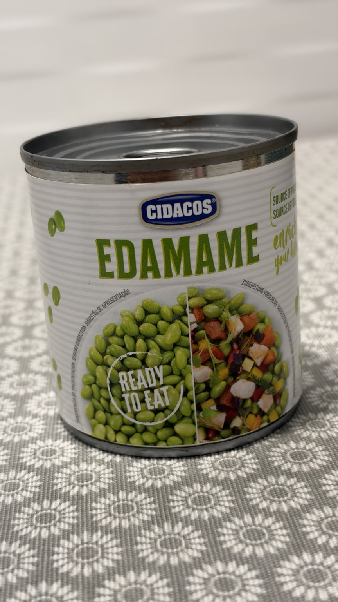
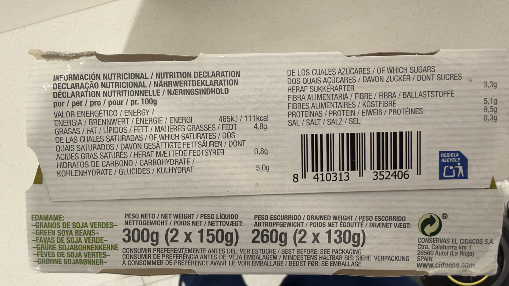
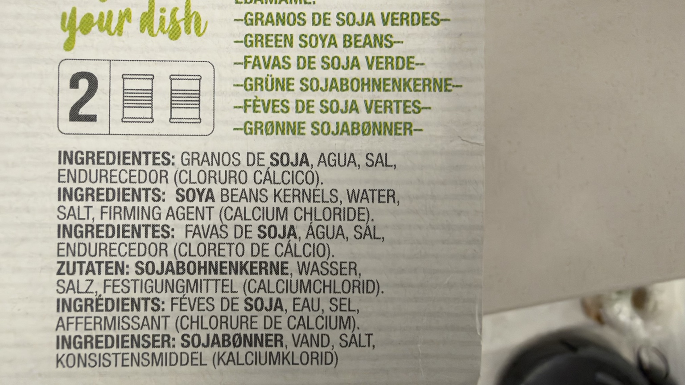

Edamame listo para comer
Granos de soja verdes en conserva, listos para comer, en pack de dos latas.
Peso neto: 300 g (2 × 150 g). Peso escurrido: 260 g (2 × 130 g).
Precio de referencia
3,75 € · 14,42 €/kg escurrido
Dónde lo compro
Carrefour Los Rosales
30/09/2026
Lo uso en
Por qué lo uso
Lo uso para preparar burritos.
En mi cocina
Lo uso en el relleno de los burritos. Está listo para comer: escurro los granos antes de incorporarlos.
Composición
granos de soja, agua, sal, endurecedor (cloruro cálcico).
Alérgenos: soja.
Conservas El Cidacos, S. A., Ctra. Calahorra km 1, 26560 Autol (La Rioja), España.
Valores por 100 g
| Energía | 465 kJ / 111 kcal |
|---|---|
| Grasas | 4,8 g |
| De las cuales saturadas | 0,8 g |
| Hidratos de carbono | 5 g |
| De los cuales azúcares | 3,3 g |
| Fibra | 5,1 g |
| Proteínas | 9,5 g |
| Sal | 0,3 g |

Valoración de Yuka
90 / 100 · Excelente
Los ocho aspectos visibles aparecen como positivos según Yuka. Su clasificación «Verduras 100 %» se conserva como dato de Yuka, separada de la lista de ingredientes del envase, que también incluye agua, sal y cloruro cálcico.
Aspectos positivos según Yuka
- Verduras · 100 %: Excelente cantidad
- Proteínas · 9,5 g por 100 g: Excelente cantidad de proteínas
- Fibras · 5,1 g por 100 g: Excelente cantidad de fibras
- Valor energético · 111 kcal por 100 g: Bajo en calorías
- Grasas saturadas · 0,8 g por 100 g: Bajo en grasas saturadas
- Azúcar · 3,3 g por 100 g: Bajo en azúcar
- Sal · 0,3 g por 100 g: Bajo en sal
- Aditivos · 1: Ningún aditivo de riesgo
Fuente: captura de Yuka aportada el 16/10/2026.

Ingredientes y tabla nutricional del envase

